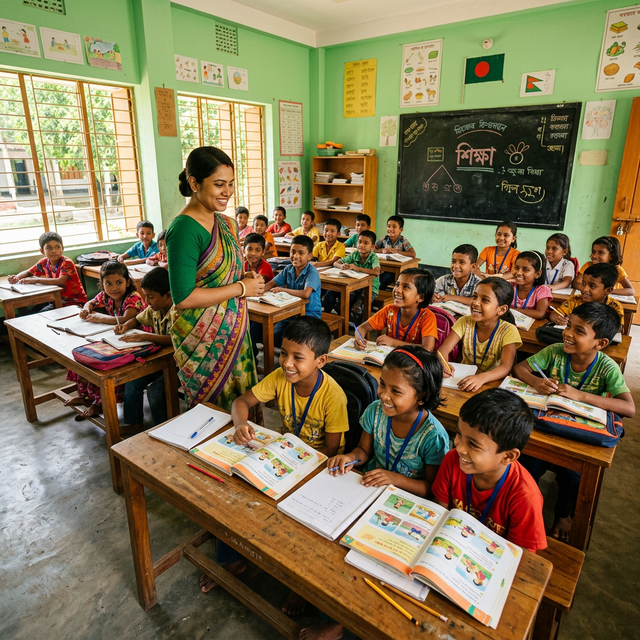
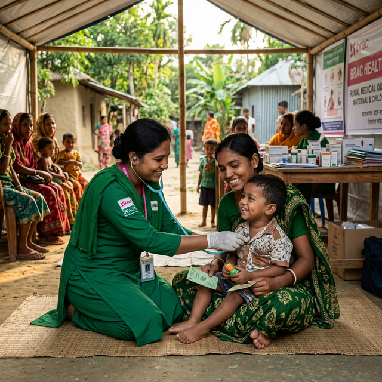
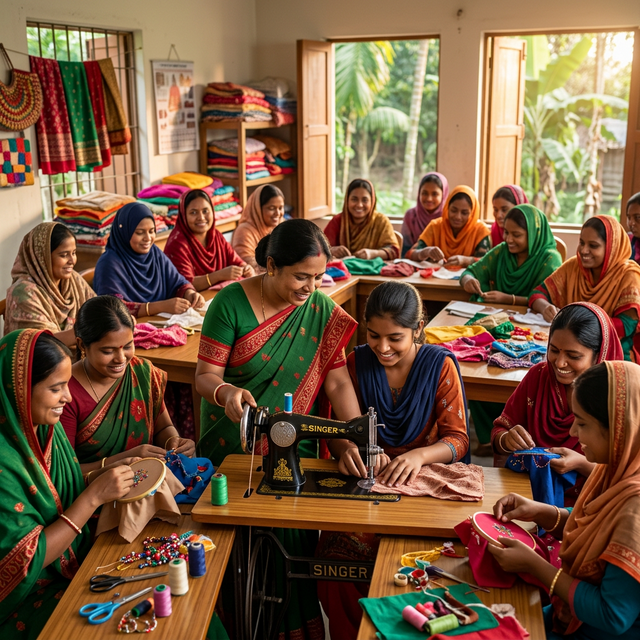

Disa Bangladesh
দিশা বাংলাদেশ
Loading...
Comprehensive, community-led programs addressing the root causes of poverty and inequality across Bangladesh.
Providing sustainable, low-interest financial services to low-income families across rural Bangladesh. We help families build savings, access credit, and invest in income-generating activities.

Supporting farmers with modern farming techniques, quality seeds, and tools. We connect smallholder farmers to markets and help them adopt climate-resilient agricultural practices.

12 mobile medical units bring essential healthcare to remote upazilas monthly — free consultations, maternal care, vaccinations, and nutrition counselling for communities with no hospital access.

We operate 45 learning centres providing free education to 15,000+ children annually. We also run vocational training for youth to build in-demand skills for sustainable employment.
Disa BD Training Center offers professional and vocational training programs that equip youth and adults with market-ready skills, improving employment opportunities across Bangladesh.
Tree planting campaigns, flood resilience training, solar energy access, and sustainable agriculture for climate-vulnerable communities in coastal Bangladesh.
Linking rural farmers and artisans to markets through cooperative networks, digital platforms, and agri-business training to increase household incomes sustainably.
Safe spaces, counselling, and legal aid for vulnerable children. We work with local government to prevent child labor and early marriage across our project areas.
Thousands more communities need access to our programs. Your donation helps us reach them.
Disa Social Development
Working towards a more just and equitable society through awareness campaigns, community organising, legal aid, and women's empowerment. We address root causes of marginalisation.
- ✔ Women's leadership and civic engagement
- ✔ Legal aid and domestic violence support
- ✔ Child protection and anti-trafficking programs
- ✔ Community awareness and sensitisation campaigns
Support This Program →